고깃값이 부쩍 오른 요즘, 부담 없이 배부르게 먹을 곳을 찾다가 대흥연탄불고기를 다녀왔습니다.
이 집은 연탄불고기 한 사람분이 11,000원인데, 여기에 구수한 된장찌개와 공기밥, 쌈 채소, 밑반찬까지 함께 나와서 한 끼가 정말 알찼어요. 연탄에 애벌구이해 불향을 입힌 돼지불고기를 직접 맛보고, 찍어온 사진과 함께 정직하게 남겨봅니다.
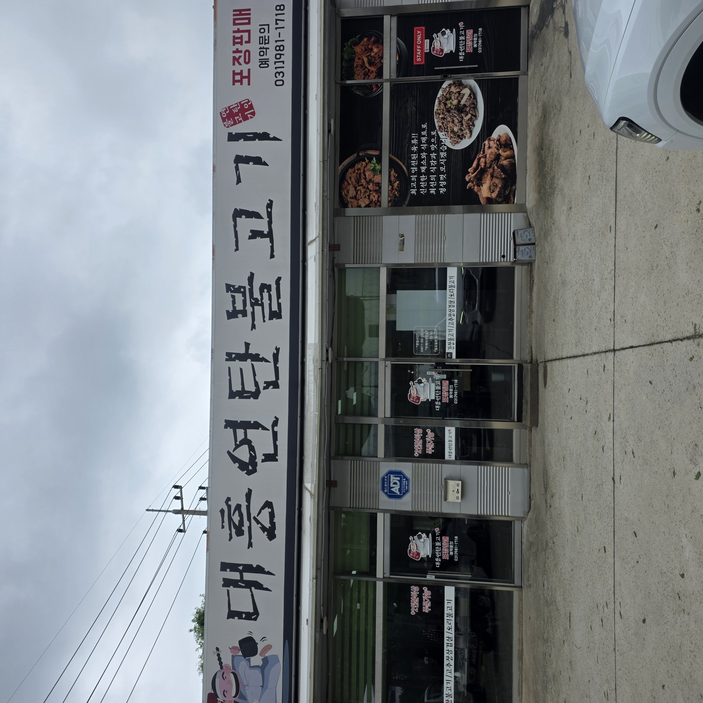
대흥연탄불고기는 김포 쪽 도로변에 자리한 동네 고깃집입니다.
주변에 군부대가 많은 지역이라 군인 손님도 종종 보였고, 가족·직장인 손님까지 편하게 찾는 곳이었어요. 간판에 포장과 예약 문의 번호(031-981-1718)가 큼직하게 붙어 있어 포장 수요도 많아 보였습니다. 매장 근처에 주차도 되어 차로 가기 편했고요.
메뉴는 연탄불고기가 중심이에요. 벽 메뉴판 기준으로 아래처럼 정리했습니다. (가격은 방문 당시 기준으로, 이후 달라질 수 있어요.)
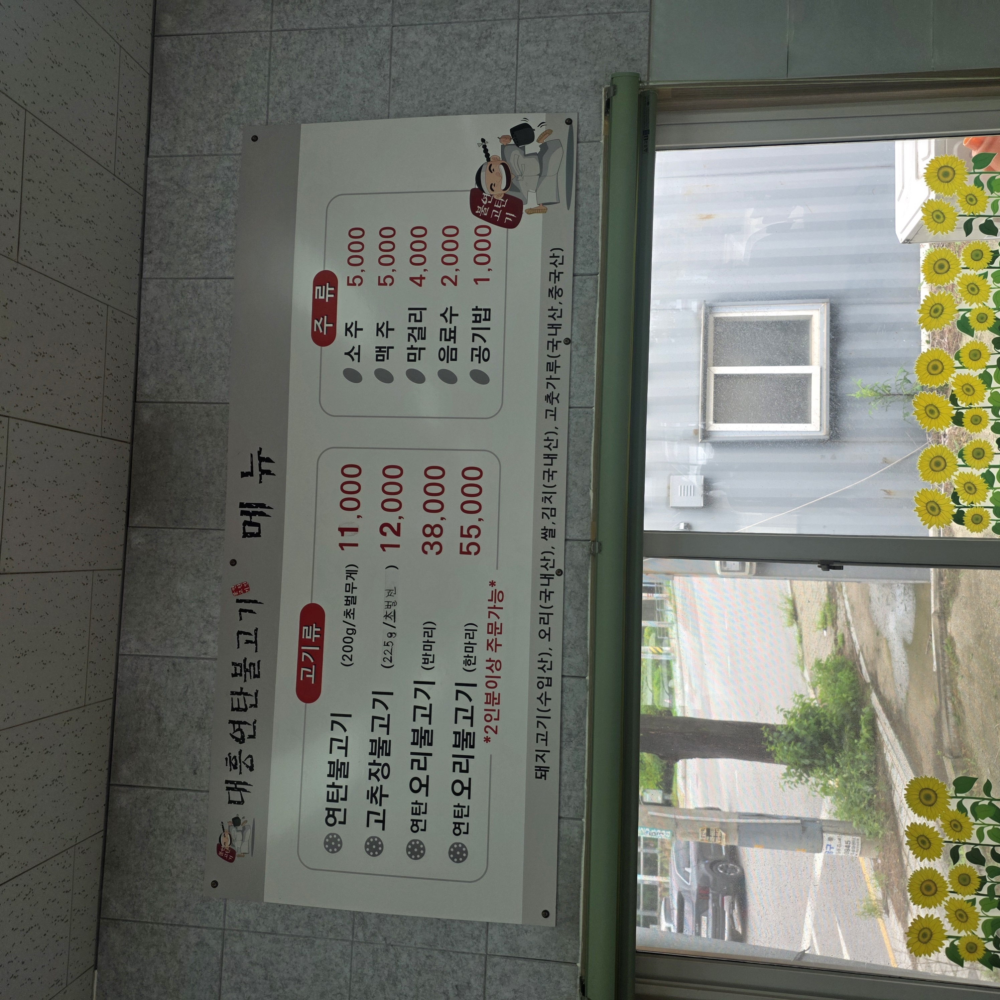
· 연탄불고기 : 11,000원 (200g, 초벌 무게)
· 고추장불고기 : 12,000원 (225g)
· 연탄오리불고기 : 반마리 38,000원 / 한마리 55,000원
· 공기밥 1,000원 · 음료수 2,000원 · 소주·맥주 5,000원 · 막걸리 4,000원
고기는 2인분부터 주문이 기본입니다. 테이블에 놓인 키오스크(테이블오더)로 주문했는데, 2인 세트 22,000원, 3인 세트 33,000원에 된장찌개와 공기밥이 포함이라 계산이 간편했어요.
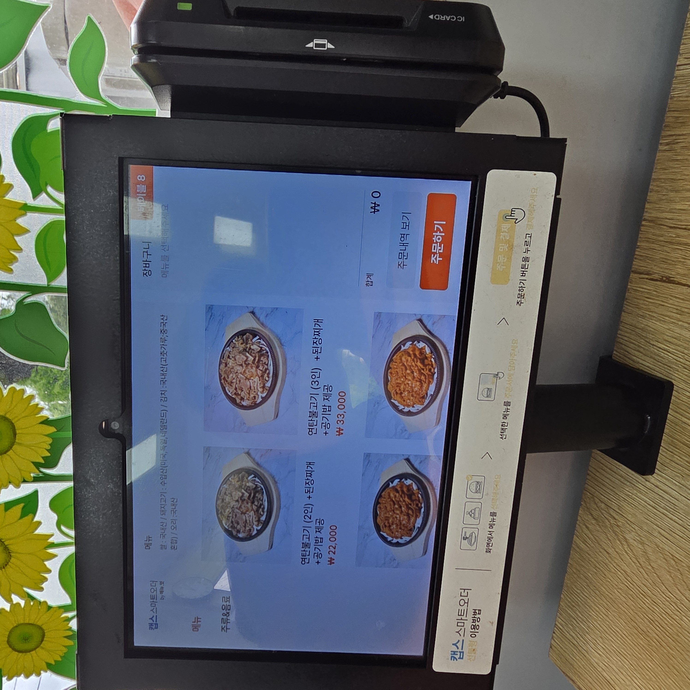
주문 후 오래 기다리지 않아 김이 펄펄 나는 불고기 한 판이 나왔습니다.
연탄에 애벌로 구워 불향을 입힌 돼지고기를 양파 깔린 무쇠판에 수북이 담아주는데, 상에 놓이자마자 고소한 연탄불 향이 확 퍼졌어요.
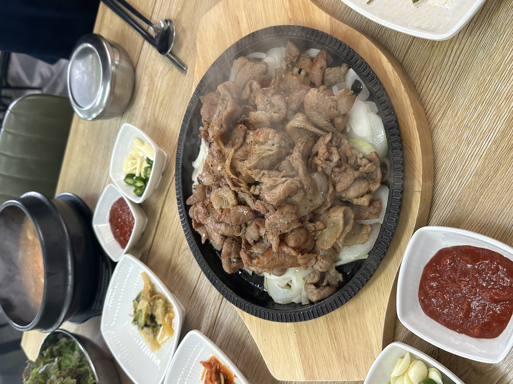
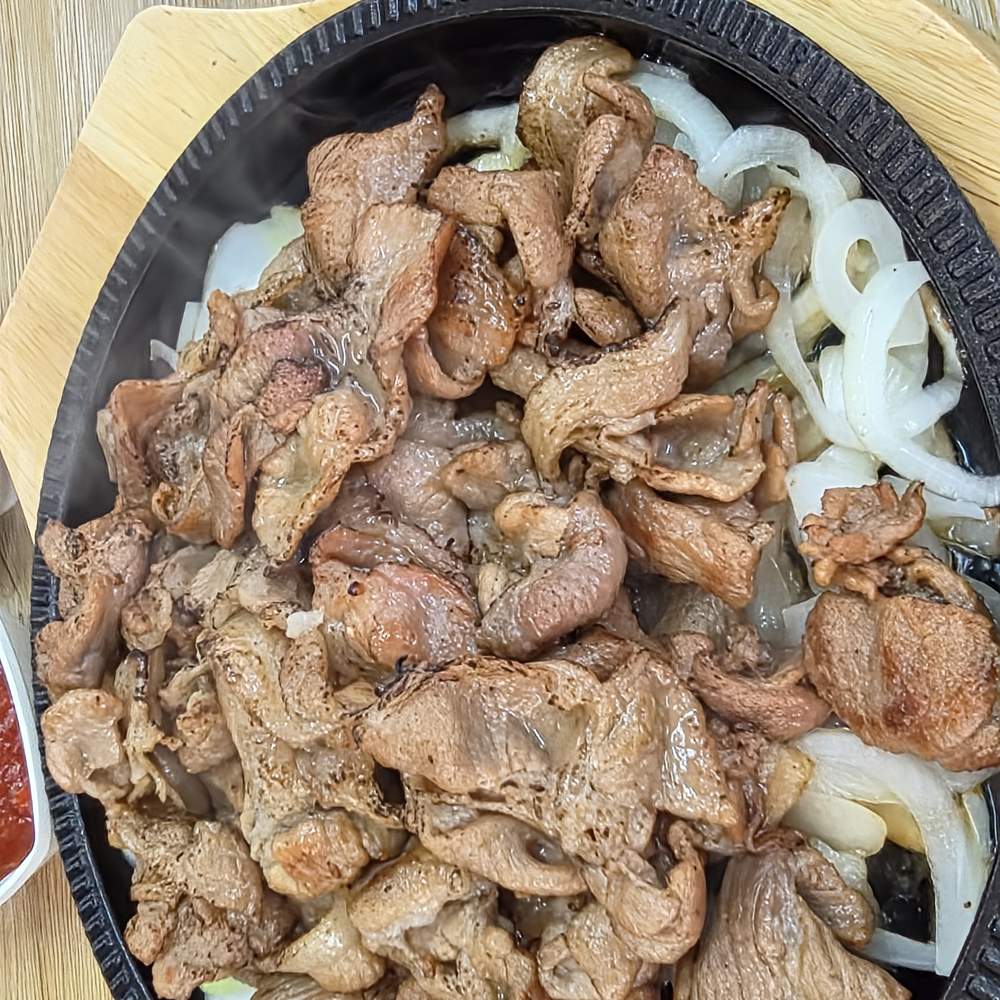
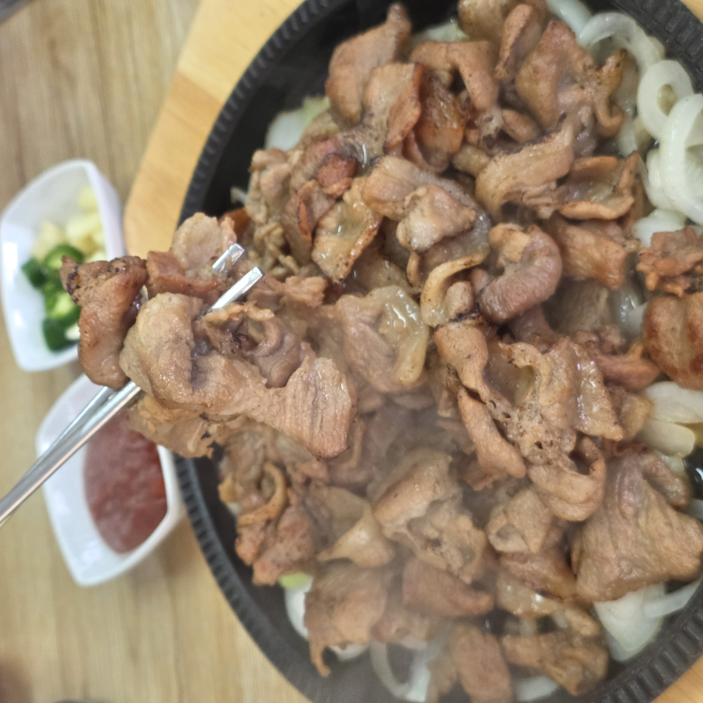
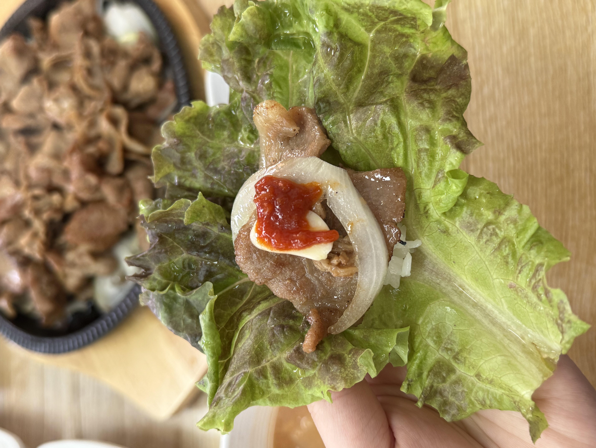
맛을 보니 불향은 진한데 양념이 짜지 않아 자꾸 손이 갔어요.
얇게 썬 고기라 가장자리는 바삭, 속은 촉촉했고, 양파의 단맛이 어우러져 느끼함이 덜했습니다. 상추에 고기와 마늘·풋고추, 쌈장을 올려 싸 먹으니 그야말로 밥도둑이더라고요.
이 집의 매력은 곁들이가 알차다는 데 있었어요.
다시마채무침·무생채·파무침·열무김치·오이무침 같은 반찬이 깔끔하게 나오고, 초장과 쌈장, 마늘·풋고추, 쌈 채소까지 넉넉했습니다. 반찬이 담백해서 고기 맛을 해치지 않았어요.
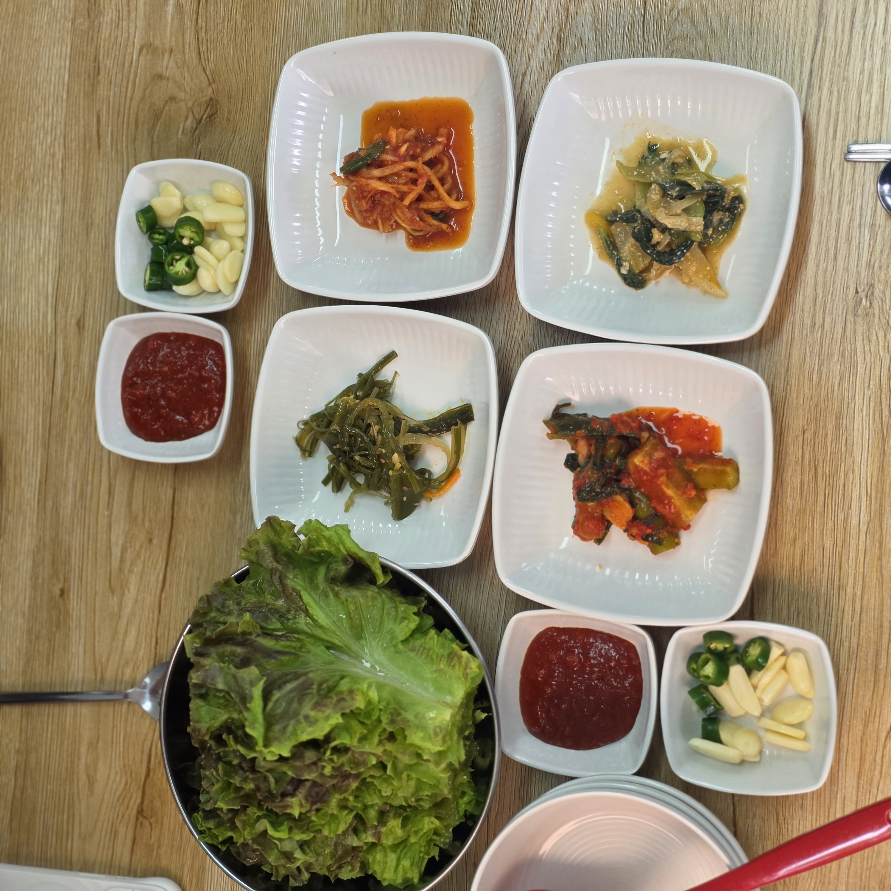
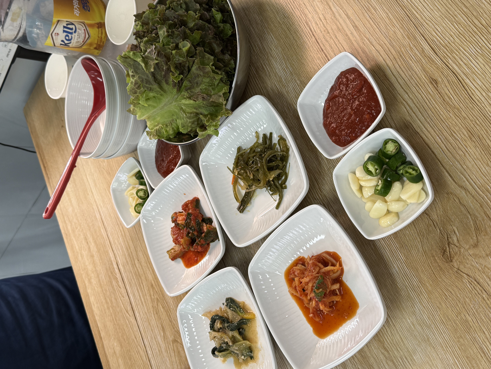
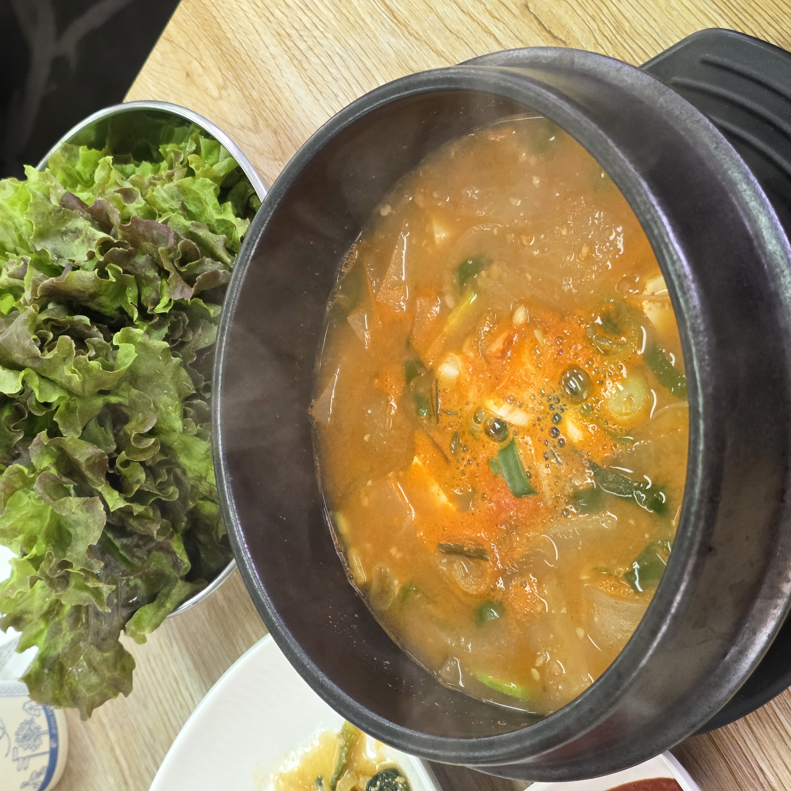
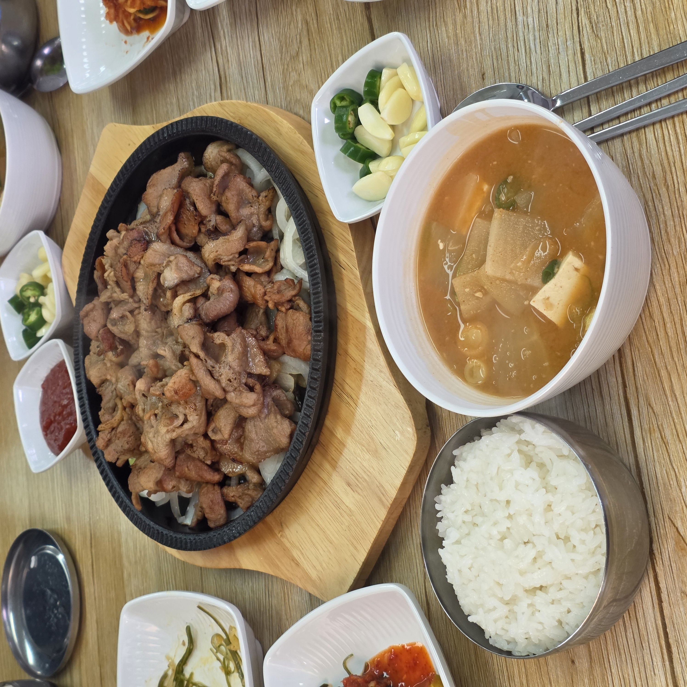
함께 나온 된장찌개는 무와 두부, 파를 넣어 구수하고 칼칼했고, 갓 지은 공기밥에 곁들이니 속이 든든했습니다. 고기만 먹는 게 아니라 제대로 된 한 끼를 먹는 느낌이었어요.
식사하는 동안 보니, 부대가 많은 동네라 그런지 군인 손님이 오면 사장님이 공기밥을 넉넉히 챙겨주시는 모습이 보였어요.
크게 티 내는 건 아니지만, 한창 먹을 나이의 장병들에게 밥 한 공기 더 얹어주는 그 인심이 참 보기 좋았습니다. 이런 동네 밥집 특유의 정도 대흥연탄불고기의 매력 같아요.
· 가성비 좋게 연탄불고기로 배불리 먹고 싶은 분
· 김포 쪽에서 가족·일행과 든든한 한 끼가 필요한 분
· 고기 + 찌개 + 공기밥이 함께 나오는 한상차림을 좋아하는 분
참고할 점 — 고기류는 2인분 이상 주문이고, 돼지고기는 메뉴판상 수입산이에요. 가격·구성은 방문 시점 기준이라 달라질 수 있으니, 방문 전 전화(031-981-1718)로 확인하면 좋습니다.